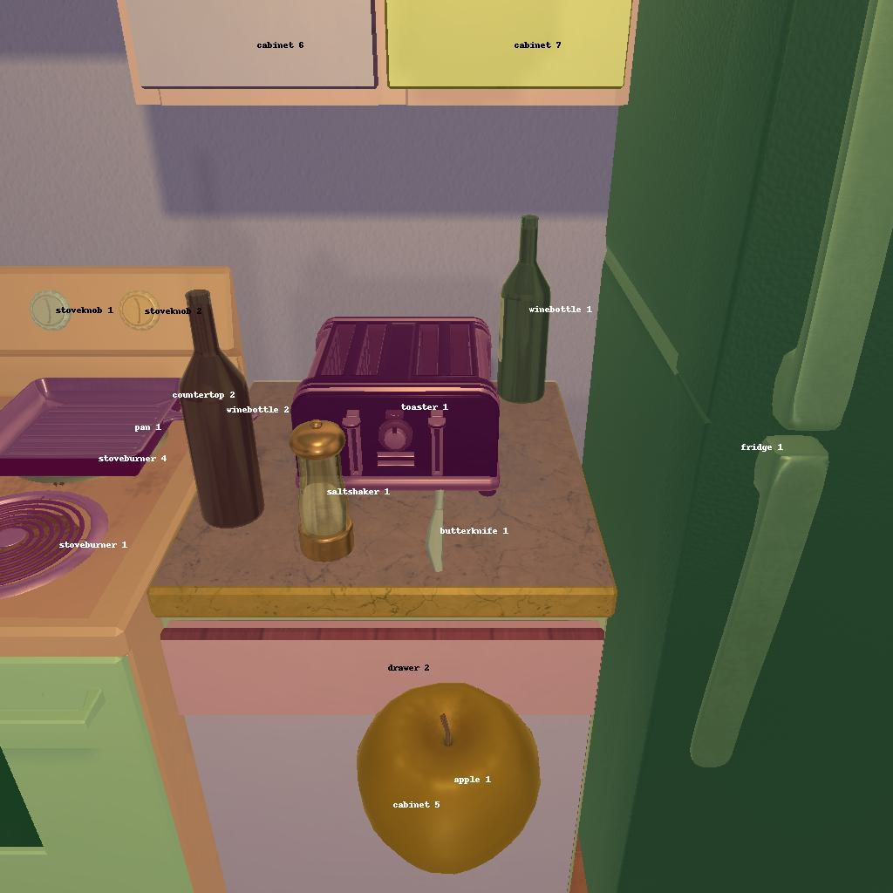

---------------------------------------------------------task: 14---------------------------------------------------------
--------------------------------------------------------------------------------------------------------------------------------------------------------------------
--------------------------------------------------------------------------------------------------------------------------------------------------------------------
Step:--------------------------------------------------------------------------15-------------------------------------------------------------------------------
----------------------------------------
VLM Prompt:
Image1:
**Instruction**
1. Analyze the provided image to identify all visible household objects, focusing on those relevant to the task description "cool some apple and put it in countertop."
2. Use the analysis of the image and the task hint "The agent must find an object of the desired type, pick it up, go to a fridge, cool the object with the fridge, then find the correct location to place it, and put it down there. The agent does not need to use the fridge button or open the fridge to cool the object, and the agent just needs to do action that is "cool the object with the fridge"." to answer the question: what is the most reasonable action in the choices for the task description "cool some apple and put it in countertop"?
4. Decide and write the answer using the template: The answer is: (i): , where i is the real number. If there is no desired object in the image, search every place based on **Initial Observation** to find the object. And if no one is exactly correct, choose a similar answer.
**Initial Observation**
You are in the middle of a room. Looking quickly around you, you can see microwave (1), countertop (1-2), cabinet (1-11), diningtable (1), drawer (1-3), sink (1), sinkbasin (1), toaster (1), stoveburner (1-4), fridge (1), coffeemachine (1), garbagecan (1)
**Answer Choices**
(1): go to microwave 1
(2): go to countertop 1
(3): go to cabinet 1
(4): go to diningtable 1
(5): go to drawer 1
(6): go to sink 1
(7): go to cabinet 2
(8): go to cabinet 3
(9): go to sinkbasin 1
(10): go to cabinet 4
(11): go to cabinet 5
(12): go to drawer 2
(13): go to toaster 1
(14): go to cabinet 6
(15): go to stoveburner 1
(16): go to cabinet 7
(17): go to stoveburner 2
(18): go to stoveburner 3
(19): go to stoveburner 4
(20): go to drawer 3
(21): go to cabinet 8
(22): go to cabinet 9
(23): go to cabinet 10
(24): go to coffeemachine 1
(25): go to cabinet 11
(26): go to garbagecan 1
(27): put apple 1 in/on countertop 2
(28): examine apple 1
(29): examine countertop 2
**Answer**
Let's think step by step by following the instructions.
----------------------------------------
----------------------------------------
Original Response:
Firstly, we identify the apple in the image labeled as "apple 1" and the countertop labeled as "countertop 2." According to the task description, we need to cool the apple and then put it on the countertop.
The task hint specifies that the agent does not need to use the fridge button or open the fridge to cool the object. Therefore, we can assume that simply going to the fridge is sufficient for the "cool" action.
Since there is no action listed in the answer choices that directly states "cool the apple with the fridge," we must choose an action that involves the apple and placing it on the countertop after the implied cooling action.
The most reasonable action from the list that fits the task description "cool some apple and put it in countertop" is to put the apple in or on the countertop after cooling it, as there is no explicit action listed for cooling the apple with the fridge.
The answer is: (27): put apple 1 in/on countertop 2.
----------------------------------------
----------------------------------------
>>> Refine Original VLM Response and Get Pure Action: put apple 1 in/on countertop 2
----------------------------------------
-----------------------------------------------------------------
Running time: 8.153732299804688 seconds
Total Money: 4.783620000000002
-----------------------------------------------------------------
-----------------------------------------------------------------
Text Observation:You put the apple 1 in/on the countertop 2.
-----------------------------------------------------------------
UNSUCCEED